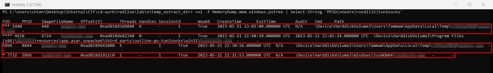
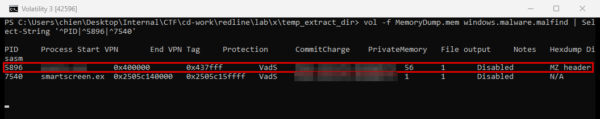
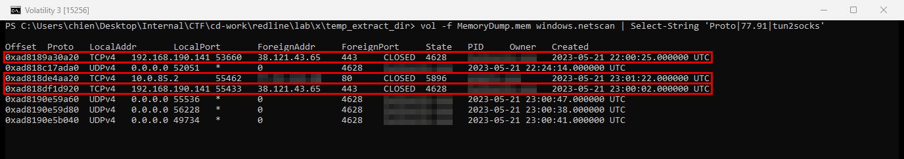
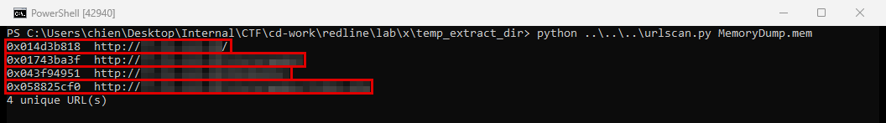

RedLine
- Lab: RedLine trên CyberDefenders. Nhóm Endpoint Forensics, độ khó Easy, đã retired.
- Dữ liệu:
MemoryDump.mem, memory dump (ảnh bộ nhớ RAM) 2 GB của một máy trạm Windows. - Công cụ: Volatility 3 (2.28.2), plugin
windows.pstree,windows.malware.malfind,windows.netscan. Một script Python nhỏ quét chuỗi URL trong dump, thay cho Strings. - Quy ước:
- Ảnh là ảnh chụp cửa sổ PowerShell chạy các lệnh trên memory dump của lab. Giờ trong log là UTC.
- Khung đỏ đánh dấu chỗ cần chú ý. Vùng làm mờ là đáp án (tên tiến trình, thư mục, quyền vùng nhớ, tên ứng dụng VPN, IP, URL).
Tóm tắt kết quả
- Một file thực thi chạy từ thư mục con tên chuỗi hex trong
C:\Users\Tammam\AppData\Local\Temp\. Có 2 bản đang chạy: PID 5896 (từ 22:30:56 UTC ngày 21/05/2023) và PID 5480 (từ 23:03:00 UTC). - PID 5896 sinh ra một binary hệ thống trong
C:\Windows\SysWOW64(PID 7732) lúc 22:31:53 UTC. windows.malware.malfindthấy trong chính PID 5896 một vùng nhớ riêng tại0x400000bắt đầu bằng MZ header (dấu hiệu của một file PE), có quyền ghi và thực thi.- Một ứng dụng VPN chạy
tun2socks.exe(PID 4628) và có kết nối TCP 443 tới38.121.43.65. - PID 5896 có kết nối TCP tới một IP public qua cổng 80. Trong memory có 4 URL
http://khác nhau trên IP này.
Bước 1: tìm tiến trình đáng ngờ
- Mục tiêu: tìm tiến trình không thuộc hệ điều hành hay phần mềm quen thuộc.
- Cách làm: chạy
windows.pstree, lọc tiến trình chạy từ thư mục người dùng và các tiến trình liên quan.
vol -f MemoryDump.mem windows.pstree | Select-String 'PPID|<tên tiến trình>|<binary hệ thống>|tun2socks'

- Nhận định:
- File thực thi chạy từ một thư mục con tên ngẫu nhiên trong Temp là hành vi bất thường với máy trạm văn phòng.
- Cùng một file chạy 2 lần cách nhau khoảng 32 phút. Lần thứ hai có PPID 448, là
svchost.exe(theowindows.netscan, PID 448 là svchost.exe). - Chưa đủ dữ liệu để xác định cơ chế chạy lại: plugin
windows.registry.scheduled_taskskhông đọc được keyTaskstrong memory dump. Cần thêm hive SOFTWARE và thư mụcC:\Windows\System32\Taskscủa máy. - Hướng giải: tên tiến trình và đường dẫn đầy đủ là các ô đã làm mờ ở dòng PID 5896.
Bước 2: vùng nhớ đáng ngờ
- Mục tiêu: tìm vùng nhớ thực thi không gắn với file trên đĩa.
- Cách làm: chạy
windows.malware.malfindtrên toàn bộ tiến trình, lọc các tiến trình có kết quả.
vol -f MemoryDump.mem windows.malware.malfind | Select-String '^PID|^5896|^7540'

- Nhận định:
- Một file PE nằm trong vùng nhớ riêng (private), có quyền ghi và thực thi, ở địa chỉ nền mặc định
0x400000. Đây là dấu hiệu mã độc tự giải nén payload rồi chạy trong bộ nhớ, không gắn với file trên đĩa. - Kết quả malfind cho tiến trình con PID 7732 trống. Log hiện có không cho thấy mã bị chèn vào tiến trình con.
- Hướng giải: giá trị bảo vệ vùng nhớ là ô Protection đã làm mờ ở dòng PID 5896.
Bước 3: ứng dụng VPN trên máy
- Mục tiêu: xác định tiến trình tạo đường hầm mạng.
- Cách làm: chạy
windows.netscan, lọc theotun2socksvà IP C2.
vol -f MemoryDump.mem windows.netscan | Select-String 'Proto|<IP C2>|tun2socks'

- Nhận định:
tun2sockschuyển lưu lượng của card mạng ảo sang proxy SOCKS. Ứng dụng VPN dùng nó để tạo đường hầm.- Máy có 2 địa chỉ nguồn:
192.168.190.141(card mạng thật) và10.0.85.2(card mạng ảo của VPN). Kết nối C2 của PID 5896 đi ra từ10.0.85.2, tức đi qua đường hầm VPN. - Trên máy trạm doanh nghiệp, VPN không được cấp phép là điểm cần kiểm tra lại với người dùng.
- Hướng giải: tên ứng dụng VPN là thư mục cha của
tun2socks.exetrong cột Path ở Bước 1. Tên tiến trình chính của ứng dụng xem trong danh sách tiến trình.
Bước 4: IP C2 và URL
- Mục tiêu: tìm địa chỉ máy chủ điều khiển và đường dẫn mã độc gọi tới.
- Cách làm: lấy IP ở Bước 3, quét toàn bộ memory dump để tìm chuỗi
http://<IP>....
import mmap, re, sys
with open(sys.argv[1], "rb") as f, mmap.mmap(f.fileno(), 0, access=mmap.ACCESS_READ) as m:
for x in re.finditer(rb"http://<IP C2>[\x21-\x7e]{0,80}", m):
print(hex(x.start()), x.group().decode())

- Nhận định:
- Có nhiều đường dẫn khác nhau trên cùng IP. Đường dẫn kết thúc bằng file
.phplà điểm mã độc gửi dữ liệu và nhận lệnh. - Kết nối tới IP này ở Bước 3 dùng HTTP cổng 80, nên nội dung truyền đi không được mã hóa ở tầng TLS.
- Chưa đủ dữ liệu để biết dữ liệu nào đã bị gửi ra ngoài, vì lab chỉ có memory dump, không có gói tin hay log proxy.
- Hướng giải: IP là ô đã làm mờ ở Bước 3. URL đầy đủ là dòng có đuôi
.phptrong kết quả quét.
Dòng thời gian
- 21/05/2023 22:00:25 UTC (22/05 05:00:25 UTC+7):
tun2socks.exekết nối tới38.121.43.65:443. Nguồn:windows.netscan. - 21/05/2023 22:30:56 UTC (05:30:56 UTC+7): file trong Temp chạy lần đầu (PID 5896). Nguồn:
windows.pstree. - 21/05/2023 22:31:53 UTC (05:31:53 UTC+7): PID 5896 sinh binary hệ thống PID 7732. Nguồn:
windows.pstree. - 21/05/2023 23:01:22 UTC (06:01:22 UTC+7): PID 5896 kết nối HTTP tới IP C2. Nguồn:
windows.netscan. - 21/05/2023 23:03:00 UTC (06:03:00 UTC+7): cùng file chạy lần thứ hai (PID 5480, PPID 448). Nguồn:
windows.pstree.